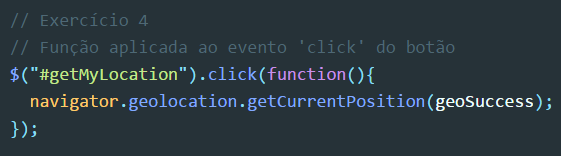

Resolução e análise à ficha de trabalho nº 7
Documento pdf associado: Ficha de trabalho nº 7
A última ficha de trabalho trata-se essencialmente da aplicação de pedidos à API do Google Maps e respetivo tratamento da sua resposta. Sem dúvida que trata-se de mais uma ficha que associa os pedidos AJAX e a utilidade das API's da melhor forma. O Google Maps é uma das melhores aplicações tecnológicas da gigante empresa multinacional Google.
Destaques a salientar:
- A implementação da técnica AJAX na ficha de trabalho foi conseguida com auxílio da biblioteca JavaScript jQuery;
- A ficha de trabalho foi divida entre dois documentos distintos, mas associados. Um tratava-se do documento HTML onde a funcionalidade "estática" de pesquisa viria a ser implementada. O outro era um documento exterior JavaScript que continha todo o código jQuery utilizado para lograr a técnica AJAX;
- Tal como nas
ficha de trabalho nº 4, nº 5 e nº 6, a documentação online da biblioteca jQuery poderia ser consultada, sendo agora também sugerido o estudo da API do Google Maps:
- Link de referência associado à API: https://developers.google.com/maps/documentation/javascript/reference/3/.
- Tal como nas restantes fichas de trabalho, o Sistema de Controlo de Versões Git deveria ser utilizado em cada alínea da ficha, sendo desenvolvidas diferentes branches em cada uma destas. No final deveria ser feito merge de todo o projeto na branch master;
- O objetivo delineado pela ficha de trabalho seria criar uma página que apresentasse a localização atual do visitante da mesma;
- Foi, de resto, apresentado um extenso código-fonte que deveria ser seguido e modificado consoante a necessidade dos alunos:
- Como "parte HTML" do código fonte fornecido é de notar que:
- O título dado página trata-se de "Map";
- Existe uma inclusão/ligação de um ficheiro JavaScript exterior (que irei analisar posteriormente);
- É designada a área da "tela" onde o mapa seria "desenhado", sendo criada uma div com o "id" denominado de "map-canvas" e sendo dando-lhe uma estilização que se baseava essencialmente numa largura de 600px e numa altura de 400px;
- Foi também criado um botão que viria a ser o "trigger" desta "mini-aplicação", com o "id" atribuído sendo "getMyLocation".
-
Quanto ao que a primeira parte do código JavaScript fornecido diz respeito:
- É criada uma variável local denominada de "map";
- A outra variável denominada de "gMapsLoaded" é atribuído o valor de "false", demonstrando que à partida o mapa não estaria carregado;
- Foi criada uma função de "loading" do mapa que seria chamada caso a variável "gMapsLoaded" retornasse "True", sendo para isto utilizada a função "window.load" e a função callback respetiva ao "loading" do mapa;
- Dentro da função que seria executada caso a estrutura de controlo retornasse "True" seria necessário incluir todo o script do Google Maps e a respetiva source, bem como a chave de acesso da API;
- Abaixo da função referida encontrava-se o trigger do mapa que seria executado caso a variável "gMapsLoaded" retornasse um valor boolean verdadeiro.
- Quanto ao que a segunda parte do código JavaScript diz respeito:
- É de notar numa primeira instância a utilização da boa prática de carregamento da biblioteca jQuery, denotada pelo "loading" do documento estar completo antes de qualquer interação da biblioteca com o mesmo;
- É apresentada uma função que servirá de callback aquando do momento em que o browser adquire a posição pretendida. A função denomina-se de "geoSuccess" e recebe comno parâmetro o posicionamento;
- Também é demonstrada uma função a ser utilizanda aquando do trigger, isto é, do clique do botão. Esta função possui como nome "getMyLocation" e, não recebendo quaisquer parâmetros, possui no seu scope uma espécie de sequência de funções que dita a localização atual do user;
- Ainda é apresentada mais uma função, que se chama "initialize", não recebe parâmetros e possui no seu scope um objeto denominado de "mapOptions" que apresentada o nível de zoom pretendido (8), a localização central em termos de latitude e longitude e ainda o tipo do mapa apresentado;
- É criada uma nova instância do objeto "Map" proveniente do Google Maps, que recebe como parâmetros tanto o elemento HTML do mapa como as opções anteriormente definidas;
- Após a função detalhada anteriormente, sucede um evento que chama a função "initialize" dentro da "window" da página, utilizando para isso o método "bind()", que também possui como outro parâmetro o "loaded-script" do mapa;
- Por fim, o mapa é "loaded" na página/utilizando para isso a função "loadGoogleMaps".
HTML presente no código fonte

JavaScript presente no código fonte (parte 1)
JavaScript presente no código fonte (parte 2)
Exercício 1: Inicie um novo repositório e faça o versionamento inicial:
Resolução:
Procedi ao versionamento inicial da ficha de trabalho da forma que me foi ensinada ao longo da cadeira e já utilizada por mim entretanto, utilizando os seguintes comandos, por ordem:
- $ git init
- $ git config user.name "Paulo Cunha"
- $ git config user.email "paulo_cunha1997@outlook.pt"
- $ git add .
- $ git commit -m "Commit inicial na ficha de trabalho nº 7"
- Iniciei o versionamento utilizando o comando "git init", procedendo em seguida à configuração local do meu nome de utilizador e email. Utilizando o comando "git add ." transformei o estado de todos os ficheiros do diretório para modified. De seguida, realizei o commit inicial do exercício.
Exercício 2: Escreva o código que carrega a API do Google Maps de forma dinâmica.
Resolução:
Procedeu-se à escrita do código que possibilitou o carregamento da API do Google Maps de forma dinâmica. Código sob o qual me debruçarei em seguida, descrevendo os vários passos tomados.
- Foi criada uma variável local denominada de "script", que criaria dinamicamente o script a partir do qual o pedido à API do Google Maps viria a ser efetuado;
- O elemento script criado foi adicionado à secção "head" do documento HTML através da função "append()";
- Finalmente, foi transmitido numa função relativa à "window" que se o valor da variável "gMapsLoaded" retornasse "True", um trigger seria executado na dita "window", permitindo o "loading" do mapa pretendido.
Exercício 3: Passe como argumento o elemento HTML do mapa na função initialize().
Resolução:
Olhando de seguida para a função "initialize()", tal como pedido no enunciado, procedi ao ato de passar como argumento na mesma o elemento HTML do mapa.
- Como se pode notar neste pequeno "snippet" da resolução da ficha de trabalho acima apresentado, passei como argumento o elemento HTML do mapa na função "initialize"():
- Este objetivo foi logrado através da criação do objeto "map", acedendo ao mesmo através do id da tela(canvas) denominado de "#map-canvas", passando também como argumento as opções do mapa definidas atempadamente.
Exercício 4: Junte a função correta ao evento 'click' do botão.
Seria necessário agora utilizar a função necessária de modo a obter o efeito pretendido ao evento de clique associado ao botão.
- Apontando ao id associado ao trigger/botão ao qual o exercício fazia menção, de modo a conseguir o resultado pretendido e obter a localização exata do user foi efetuado o acesso ao objeto "navigator":
- Utilizaram-se "geolocation" e "getCurrentPosition", passando como argumento para esta interação com o objeto pretendido a função (ou resultado da mesma) geoSuccess (detalhada seguidamente).
- Alterando a função callback denominada por "geoSuccess", referida no exercício exatamente anterior, procedi a uma alteração que me permitiu alterar a visualização das coordenadas que a mesma devolve para o centro do mapa:
- Tendo em conta que o objetivo da função já seria devolver a localização exata do utilizador através de latitude e longitude, foi necessário utilizar a função "setCenter()" de modo a atribuir estas duas distâncias ao centro do mapa.
Exercício 5: Na callback geoSuccess é recebida a posição do utilizador. Atribua o centro do mapa a essas coordenadas.

Resultado final da ficha de trabalho em questão:

Considerações finais: Tanto o "mundo Google" como os seus vários domínios sempre me fascinaram e, portanto, foi um prazer proceder à realização desta ficha de trabalho. Nunca havia eu trabalhado com a localização geográfica do Google Maps desta forma mas sempre senti curiosidade em fazê-lo. A dinamização dos resultados e a flexibilidade com que os mesmos são atingidos é algo que me trouxe grande motivação aquando da concretização da ficha de trabalho final desta cadeira. Há ainda que referir que estes exercícios ajudaram-me também no projeto referente às cadeiras de Programação Web II e Bases de Dados.